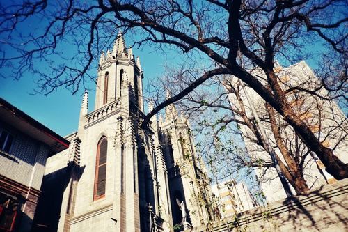
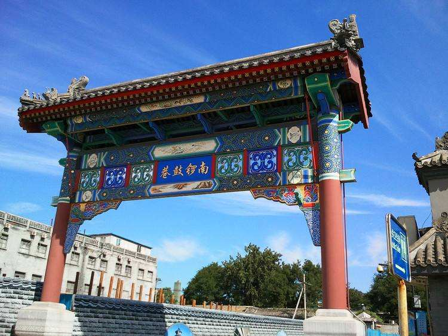
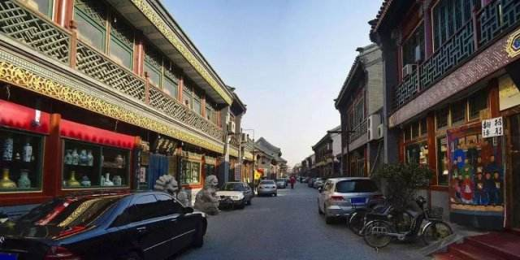
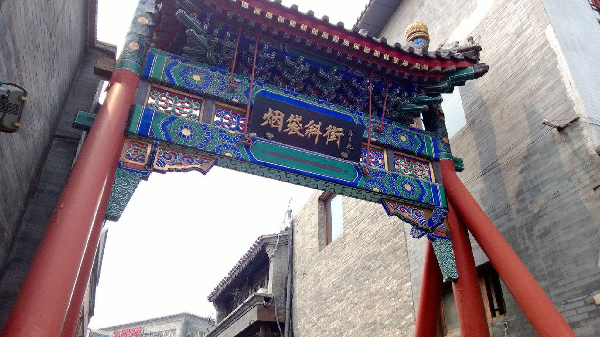
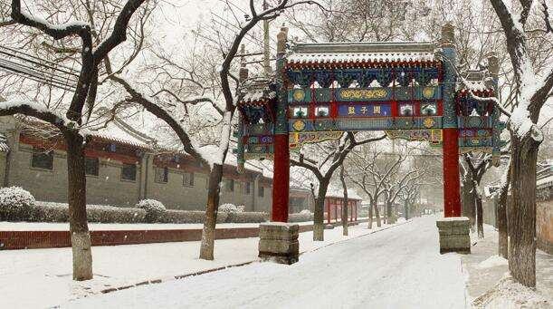
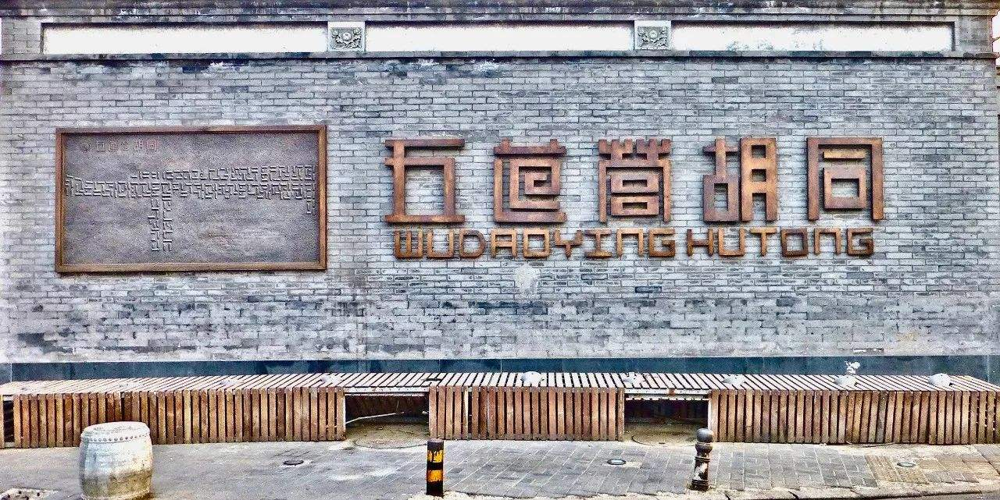
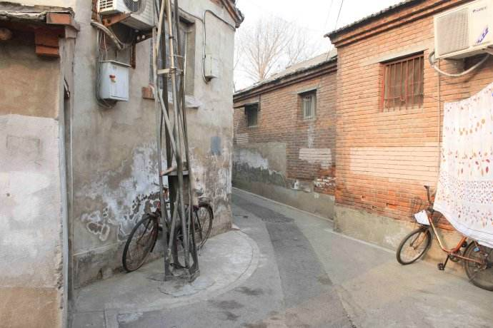

胡同美食
北京的胡同起源于元代。北京城区有名的街巷有6074条，习惯上，人们把街巷之类统归于胡同。古人曾用“有名胡同三百六，无名胡同似牛毛”。它不仅是城市的脉络，交通的衢道，而且是北京普通老百姓生活的场所，京城历史文化发展演化的重要舞台。它记载了历史的变迁，时代的风貌，并蕴含着浓郁的文化气息。

东交民巷就算没去看过也应该在历史课本中读到过，这个地方在鸦片战争以后曾经被设立为“使馆界”，所以这里现在也还能看到很多使馆的旧址，也留下了许多风格各异的西洋建筑。同时，东交民巷还是老北京最长的一条胡同，全长有将近3公里，周围还有以文人老舍命名的老舍茶馆。

南锣鼓巷是北京东城区的一条很古老的街道，街道不宽，仍旧保持着元大都胡同、街巷的规划，是我国著名的3A级景区，而且周边还有恭王府花园、什刹海等景点。
这条长800米的胡同，是北京最热闹也是最时尚的胡同区。这里藏着最地道的北京味儿。

北京琉璃厂位于西城区。距天安门广场1公里。琉璃厂西起南北柳巷、东至延寿寺街，全长800米。
琉璃厂是北京最重要的古文化街，位于北京和平门外。它起源于清代，当时各地来京参加科举考试的举人大多集中住在这里，便有了很多出售书籍和笔墨纸砚的店铺。

烟袋斜街，从名字就可以看出，这条街原来主要经营烟具。烟袋斜街位于什刹海历史文化保护区的核心区内，全程近300米，在2007年时被列为重点建设的八条特色商业街之一。据说当年居住在这一带的旗人大都有抽烟的嗜好，烟袋的需求与日俱增，所以这条街上一户挨一户的开起了烟袋铺子，街名也由此而来。
“后海波寒柳雾凉，一根烟袋点残阳。银桥可载西山重，老店犹飞爆肚香。梦落鼻壶闻烂醉，魂游瓦巷转悠扬。斜街更比烟竿短，几步明清岁月长”。诗中写的正是北京著名的烟袋斜街。

国子监街是北京仅存的牌楼的街道。东西街口各有一座，额题“成贤街”，但是人们像是将它忽略了一样，始终不能以这个名字传播，所以大多数人都不知道其实成贤街就是我们常说的国子监。国子监街是北京现存的为数不多的古老街道之一，大小宅院和庙宇，清幽恬静，十足的古城韵味。
在这条有着700多年的历史老街上，有着传统文化和记忆留存的建筑，如松堂博物馆和北京老物件陈列室；还有许多朴素且不平庸的店铺点缀着这条充满古朴的街道，如梵几客厅和好白商店。

五道营旧称武德卫营，营是一种军事单位，驻军之地一般也称为营。1965年整顿地名时将小头条、小二条并入，改称为五道营胡同。
五道营胡同挨着雍和宫和国子监街道，这条胡同形似南锣鼓巷，神韵却与之不同，它不仅有商业化的喧嚣，也有独属于自己的魅力。
各种咖啡，酒馆，文艺小店，是北京小资们的聚集地，也是外国人最爱居住的地方之一。五道营可是拍照取景的好地方，街边小店各有特色，比如复古风，可爱风；潮咖，文艺青年都能在这里找到适合自己的拍照好景。

北京市转弯最多的胡同是九湾胡同，它位于宣武区东部，东口与铺陈市胡同相连，西口从校尉营胡同通出，全长约390米，弯曲之处不下于13处，堪称北京城弯道最多的胡同。
北京的胡同多是直来直去，您走进九道湾胡同准要迷路，小小的胡同一分为五却拐了十九道弯，不迷路才怪。西城区也有一条九道湾胡同，不过现已改名为百代胡同了。